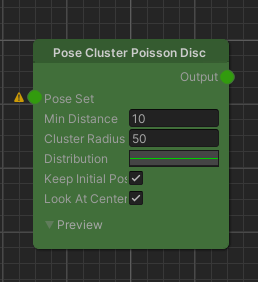
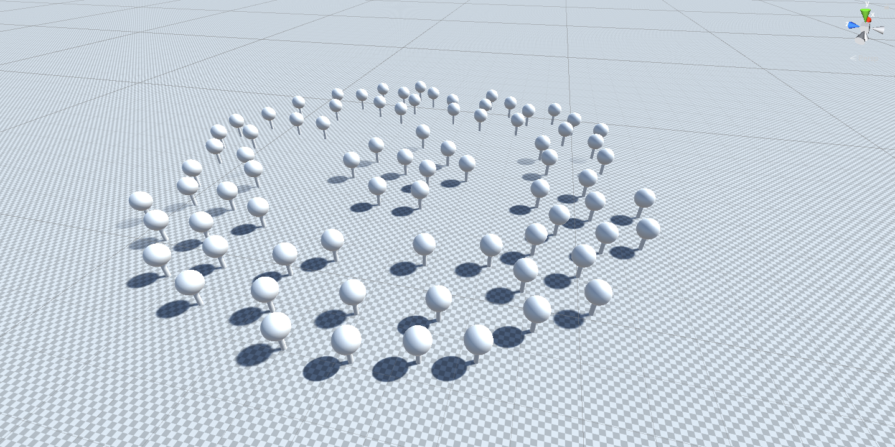

Pose Cluster Poisson Disc
Overview
The Pose Cluster Poisson Disc node samples a cluster of poses around an initial pose so that they are tightly packed but not closer than a minimum distance.

Detailed Explanation
Procedural generation often requires that we place objects at certain minimum distances from each other to prevent overlaps. An example for this could be trees or houses that should be distributed across an area in a natural manner. To achieve this, we introduce Poisson Disc Sampling.
A Poisson Disc Sampling algorithm at its heart uses a uniform random function to sample candidates for a cluster but
implements an additional constraint, that is, a minimum distance that each candidate has to keep to its neighbors.
Using the minimum distance constraint we can still take advantage of the randomly generated candidates but reject the
ones that are too close to each other. This ultimately gives the natural distribution we want to achieve. This unique
property of our sampling function can be summarized as a blue noise distribution.
It is important to note here that the underlying random generator is seeded with hashed geographical coordinates to
provide a deterministic behavior (i.e. passing the same position with the same set of parameters will always result in
the same cluster).
The Distribution curve parameter was additionally implemented to extend the basic Poisson Disc Sampling algorithm with a user-defined density function. While the x-axis displays the normalized distance [0..1] from the cluster's center to its edge, the y-axis shows the relative density at that distance. Using this parameter the user can break up the uniform shape of the cluster and introduce more variance.
Overlapping clusters will not fulfill the minimum distance constraint.
Parameters
Inputs
| Name | Type | Description |
|---|---|---|
| Input | PoseSet | The initial set of poses to sample the cluster poses from. |
Controls
| Name | Type | Description |
|---|---|---|
| Min Distance | float | The minimum distance that clustered poses will have towards one another. |
| Cluster Radius | float | The radius of the generated pose cluster (i.e the max. distance of a pose towards the center). |
| Distribution | AnimationCurve | Curve that determines the distribution of the poses over the normalized distance inside of the generated cluster. Together with the MinDistance parameter, this will determine the cluster's local densities. |
| KeepInitialPose | bool | Whether the initial pose the cluster was created from will not be removed and stay at the origin. |
| LookAtCenter | bool | Whether the newly generated cluster poses will be rotated towards the cluster's origin. |
Use Cases
Tree Cluster

For this example use case we want to spawn a bunch of tree prefabs in a cluster. To keep the setup simple we generate an
initial set of poses from a Grid Poses node and use the output as input for the Pose Cluster Poisson Disc node to sample
our clusters from.
Next we set the Min Distance parameter. This distance should not be smaller than the extents of our spawned objects,
so that they do not overlap. After that we can change the Radius and observe how the poses distribute over the
changing area of the cluster. Lastly changing the Distribution curve parameter, with respect to the Min Distance,
will determine the local densities of our cluster. Note how in the image above we effectively create a center cluster of
trees and a ring shaped outer cluster all in one go.

Further Reading
- Fast Poisson Disk Sampling by Robert Bridson
- Supersampling Wikipedia page
- Jason Davie's Poisson-Disc Sampling interactive examples and further experiments